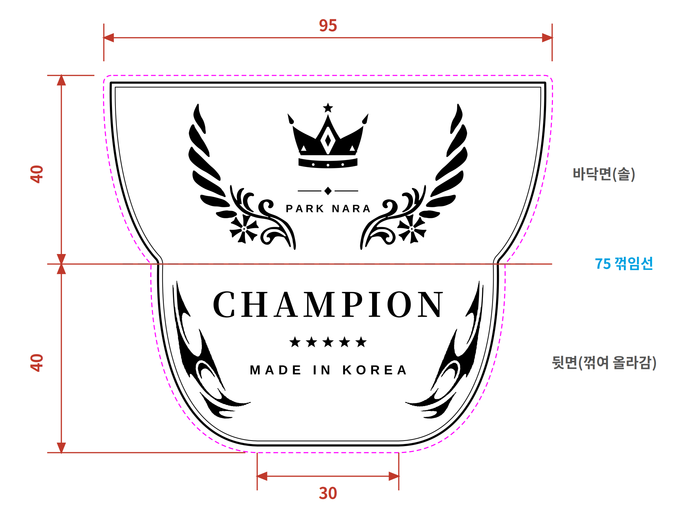

CHAMPION · 동판 하부 도안 D (수정 반영)
의뢰 도면 치수 적용 · 95 / 75 / 30 · 높이 40 + 40 = 80 mm · 75 라인에서 각접

치수 도면 (AI)
골드 각인 미리보기
바닥면 수정
① 날개 끝을 왕관 높이에 맞춤 · 왕관 조금 크게 · ② PARK NARA 아래로 · 꽃 →
6잎 꽃
으로 교체
뒷면 수정
구분선(별 · 다이아) · PREMIUM 삭제 · ③
CHAMPION 위로
→ ★★★★★ → MADE IN KOREA · 트라이벌을
테두리를 따라 늘여서
배치
도면 표기
검정 = 각인 · 분홍 점선 = 재단선 · 파랑 점선 = 75 꺾임선(각접)
꺾임 각도는 도면에 없어 확인 필요